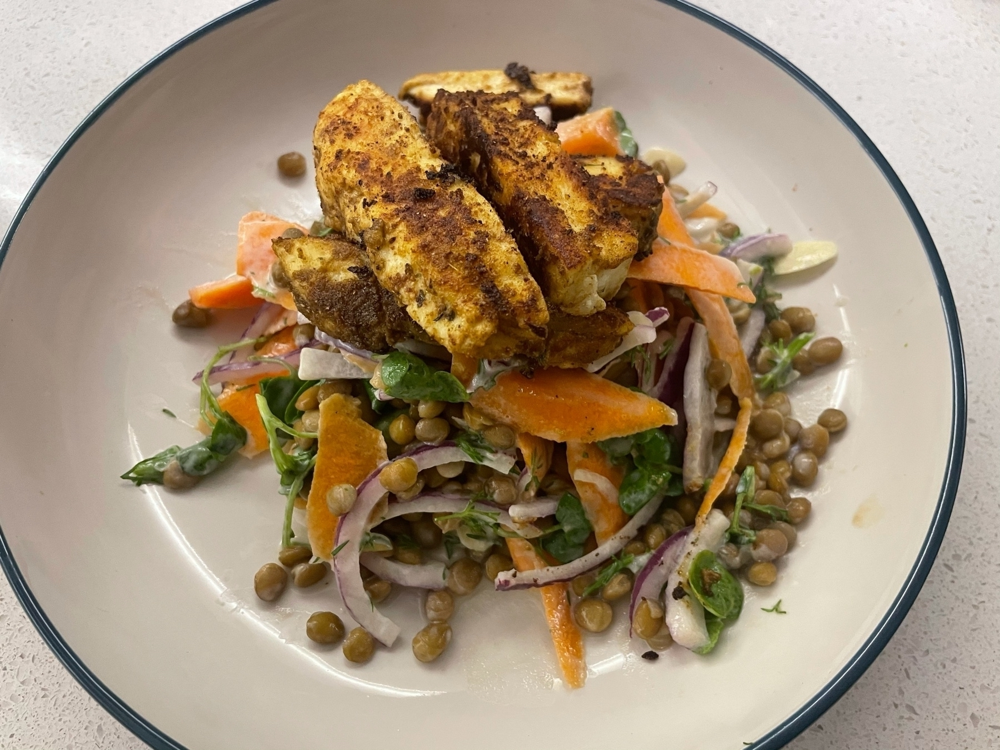

Halloumi with a lime, carrot and lentil salad today. Courtesy of @sortedfood, who are killing it right now with midweek meals.

If you’re doing anything with Unreal Engine right now even if it’s Virtual Production, this is a very much essential watching www.youtube.com/watch
Organising notes and came across this. I think it was based on a dream, but might actually make a good game?
An Adventure Into Cloud Providers As A Non-Technical Founder
An Introduction
I’m not a developer. While I know my way around a linux terminal, can spin up database servers and get an app from Github up and running, I don’t spend my days coding, nor do I have fluency to a professional level in any language.
I am however a producer. My company makes podcasts, videos and entertainment products, and nine times out of ten, I’m going to need some kind of web server to distribute our content. On a daily basis we use content management systems, file sharing, version control systems and project planning software. As the company has grown so have our requirements of the technology we use. Gone are the days where you can just bend Wordpress into a strange shape to build whatever system you need. While we’re still largely using off the shelf open source tech, our needs have gone beyond the shared web host or a collection of VPS’, and as the pandemic set in, we needed to make sure that our creators and clients could get what they needed, when they needed it.
So begun my adventure into trying to centralise our infrastructure in one place and trying to get my head round product names, pricing and what any of this is good for.
Just Use What You Know
After asking a few technical friends, the overwhelming advice was “just use what you know”. Well I didn’t really know any cloud environments, what I did know was Ubuntu. So my first port of call was to just look into VPS like systems on Digital Ocean and Linode.
This started off great, I had a bunch of machines, that I could manage. There were no weird bandwidth pricing calculations just good old fashioned Ubuntu on a server. We use Ghost quite a bit, this ran well, and we were able to spin up all the right things like version control and file sharing on separate linux machines.
Then things started to get unwieldy. We had a bunch of linux machines, sort of haphazardly put together, with all kinds of fun names, with varying levels of patching and software updates. I attempted to pull this together with Landscape and Cockpit. At this point configuration was getting a bit overwhelming, I started looking into Ansible and Terraform as a bit of a desperate attempt to create something cohesive, which is when we started to notice some cracks in our VPS ocean.
CDN’s and Quality Of Life
As a media company, we make content. Lots of it. There are drafts, finals and usually these are all fairly big files. The VPS providers have some great plans with terabytes of transfer built in at a baseline level, which makes them very attractive to a person like me. What we quickly found out though was without a decent CDN and the right tools to manage our files things got slow and difficult.
Back to the start I’m not a developer, and right now I can’t learn to be one. I needed infrastructure that could almost run itself, and do it well. VPS updates and management were out of control, and as much as I love Digital Ocean, their solutions to CDN’s aren’t great. This is when I started to look at the other clouds in the room, all of which seemed to have products that did one thing well. From extensive CDN’s, to managed databases and more robust storage systems. It was going to cost a bit more, but the allure of having infrastructure built and managed by people who knew what they were doing and kept it up to date meant the world. So I started poking around the bigger platforms.
Kubernetes and Containers - The Great Distraction
You can’t get more than two sentences in to a cloud offering without a mention of Kubernetes. The non-technical among you may ask “what is Kubernetes?”, and to that I would respond “a magical system that you throw software at and it runs across any system or infrastructure you want”. This is a very surface level definition, but the concept is based on that of “containers”.
Containers are where your software lives, then through an abstraction layer the container system does all the hard work for you in getting it up and running with a little help in defining what you want up front. It also subscribes to the do one thing well. You should only be running one service in each container.
So I naively thought this was a great idea, I’m warning you now though, this is a very deep hole. Kubernetes is very complex, and probably not what you need if you’re running a bit of blogging software and some scripts to keep your stuff in sync.
The cloud platforms will push all kinds of container stuff down your neck, because they want the big “whale” software that’s going to eat up all the resources and help bill more, but if I learnt anything it’s that you can keep your costs under control, by staying small and understanding the products you’re actually touching. Maybe Kubernetes is in my future, but right now it was a week of wasted time.
What Cloud Is For You Non-Technical Person?
After much scientific research I’d like to present to you my understanding of the different providers and what exactly they offer you and why you might want to go for them. This is not an extensive list, just the ones you’ll probably care about.
Digital Ocean/Linode
Imagine if your parents gave you the keys to a car, but didn’t tech you how to drive. This is the land of VPS’. They are cheap, fast and easy to initially understand. Where they start to suffer is the hands off approach and lack of specialist services. You’re on your own island so you better know how to look after yourself.
Google Cloud Compute
I spent quite a while here. The only way I can describe GCP is, ooh look at the shiny toys. Google clearly can do some fancy stuff with their cloud. You’ll get sucked into dreaming about all the things you can build, but if you’re in a position like me you’re not going to be using any of it. The tools here seem great, but for a quick on ramp to spin things up it’s a bit mind bending. As we mature a little bit technically this might be the choice, for now not so much.
Amazon Web Services
AWS is the kitchen sink. It has everything. We were doing a bit of work using a game engine, turns out AWS has a render server to help with that. It’s very rare that you can’t find what you need from AWS. The sheer size and collection of products though does make you wonder how well they are all maintained, but the attention to security and the great data storage tools really shone over the VPS stuff.
Azure
Azure is very like GCP and AWS. It just feels a little bit behind the curve and the UI is a bit clunky. I’m sure it’s great if you’re doing everything from the command line or you’re part of Microsofts world, but for our little collection of tools, this was not the one.
Finding A Home - For Now
So where did we end up? In the kitchen sink. For any DevOps people out there, what comes next is going to make you cry a little. AWS was the best of both worlds, using Lightsail which is essentially Digital Ocean, we could spin up our trusty Ubuntu machines. You are probably thinking, wait didn’t he leave DO because this approach didn’t work. The answer is yes. What’s been nice about AWS though is as we get braver we can begin to migrate to using a proper CDN, or get our version control database properly hosted.
We can dip our foot in the water, while still maintaining what we would usually, and as much as some of the other providers seem to be doing very similar things, this on ramp is invaluable to a non-technical founder, who sometimes just needs to stick to what they know.
Maybe one day we’ll tackle the great Kubernetes monster. For now though while we need some things taken care of like content delivery, but still want to mess with our Ghost installs, this works well. You don’t have to think too big, if you know.. you aren’t.
You know you’ve fallen far down the Virtual Production rabbit hole when you’re ordering a China exlusive VR cable off Ali Express… Interestingly though not being used for a VR solution.
Just remembered how great and simple @Panic’s Status Board was. Did anyone actually find a decent alternative that didn’t require a hefty monthly fee?
Things I didn’t know.. there’s already a trailer for the new Mighty Ducks series and I’m very much onboard. Probably more so than Mando and Wanda www.youtube.com/watch
Fiancé’s birthday supper came out rather amazingly. If you can the feast box from Norma London is fantastic.

Gyroscope gave me this lovely warning on Monday and sure enough I’m now on my ass with a cold. Pretty sure they’re wizards over there.
Caught In & of Itself (https://letterboxd.com/film/in-of-itself/) last night. Without a doubt if you’re into storytelling, the importance of meaning and finding out who you are. I would give it a watch. üçø
For the past little while I’ve been playing around with static site generators and different systems for my website. I’ve wanted to adopt an incrementally correct website since I read Brian Lovin’s post, but just couldn’t find a process that worked for me.
I rediscovered Micro.blog, which feels like all the things I liked about the fancy generator world with less of the mental backflip of Git pushes and maintaining dependencies. So I’ve moved my site over, and I’m quite looking forward to sharing the little and big things I’ve been working on.
Still fixing styling bugs and a few formatting issues, but I feel this might be the best fit for me to keep things a little bit more updated on a regular basis.